网络空间搜索引擎使用
本文最后更新于：13 分钟前
前言
相信网络空间搜索引擎是很多人在信息收集时必不可少的一个工具，本文将简单分析一下目前我们常用的网络空间搜索引擎：Shodan、ZoomEye、FOFA、Quake。我们将对它们做一个简单的分析比较，并总结出其中的一些利用技巧，从而帮助我们收集到更完善的信息
原理理解
（原理理解部分大多参考文献：网络空间搜索引擎的原理研究及安全应用）
很多人估计都能熟练的掌握网络空间搜索引擎的使用方法，但大家知道这些网络空间引擎是如何工作的吗？
其实网络空间搜索引擎和传统的搜索引擎如谷歌百度的工作方式很类似，只不过网络空间引擎的目标更多几种在全球的 IP 地址上，即搜索范围在 1.1.1.1-255.255.255.255 的所有设备及服务上
Shodan 是最早发布的网络空间搜索引擎，由 John Matherly 创建，据说 Shodan 早期工作仅由 24 台电脑完成，这 24 台电脑分布在全世界各处，不间断的地对全球 40 亿 IP 地址进行扫描及指纹识别，并提供快速、准确的结果搜索。Shodan 的框架模型可以简单理解为下图
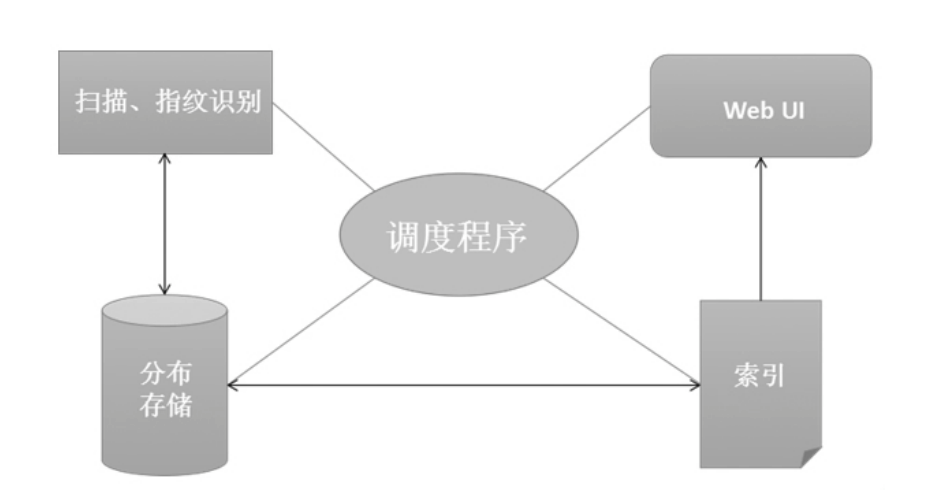全球 40 亿 IP 地址不简单的扫描及指纹识别，这是一个不小的工作量，背后似乎有着很多我们不能理解的操作。但其实我们自己也可以简单的实现这个工作
比如我们常用的端口扫描工具 nmap ，masscan。Masscan 号称是最快的互联网端口扫描器，最快可以在六分钟内扫遍互联网，nmap 虽然扫描速度偏慢，但 namp 对端口服务识别比较精准，结合这两个工具，我们似乎自己也能做一个网络空间搜索引擎
当然我们实际使用的空间搜索引擎肯定比这里设想的要复杂很多，不过原理上可以这么去理解。理解了原理后
简单介绍
Shodan
Shodan 是全球第一个网络设备搜索引擎，发布于 2009 年
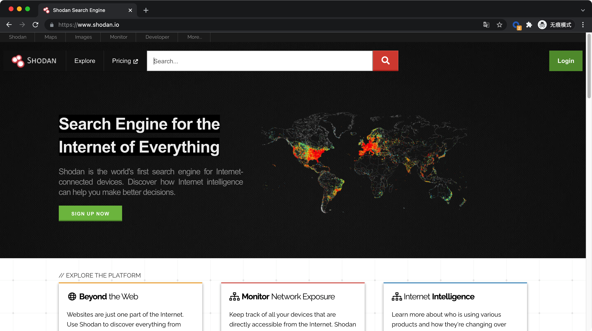最简单的使用方法就是直接输入我们想要寻找资产的关键字，如我们想找一些使用 Grafana 系统的网站，Grafana 是一个监控仪表系统，最近也被爆出了任意文件读取的漏洞
可以看到 Shodan 有 2164 条搜索结果，Shodan 会在各个位置匹配关键字 Grafana

在我们对目标资产的指纹不明晰前，直接搜索关键字的方法能尽可能的找到相关资产，但搜索结果很可能并不准确，我们可以找一个 Grafana 网站，简单查看其特征，提取出它独有的特征，然后结合 Shodan 的语法可以进行精准搜索
如 Grafana 最简单明显的特征的就是 title ，然后在 Shodan 中搜索 title:Grafana ，在 Shodan 中搜索结果变成了 86166。搜索结果反而更多了，而且搜索也更加精准
在 Shodan 中，未注册用户可以获取 1 页的搜索结果，注册用户可以获取 2 页的搜索结果。另外 Shodan 的付费分为 59$、299$、899$ 三档，而且都是按月付费
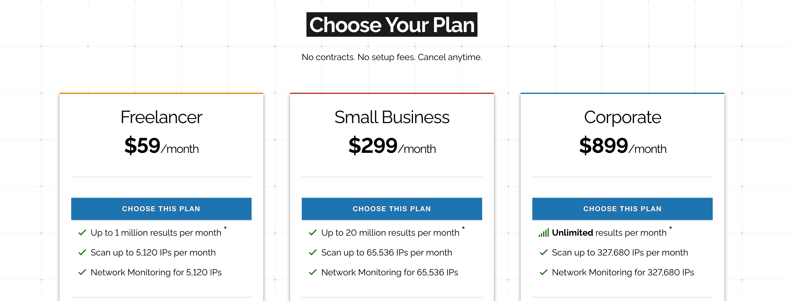ZoomEye
ZoomEye（“钟馗之眼”）是知道创宇旗下404实验室驱动打造的中国第一款网站空间搜索引擎。其实在 ZoomEye 发布前，Shodan 把这种搜索引擎更多叫做网络设备搜索引擎，而国内更习惯使用网络空间搜索引擎这个概念，据说这个概念是知道创宇安全公司于 2013 年首次在国内提出的
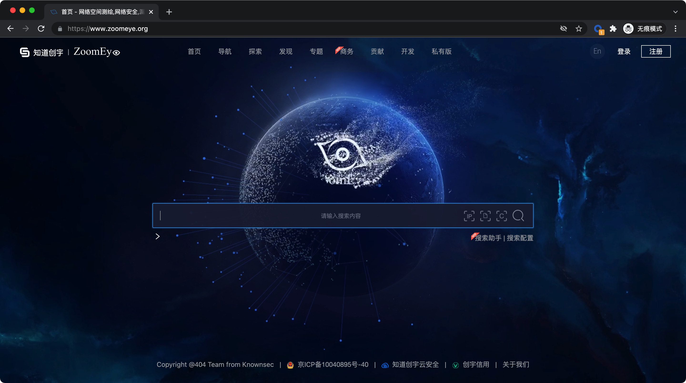同样直接搜索 Grafana 关键字，ZoomEye 直接给出了 43w 条数据！搜索 title 指纹也有 27W+ 条数据
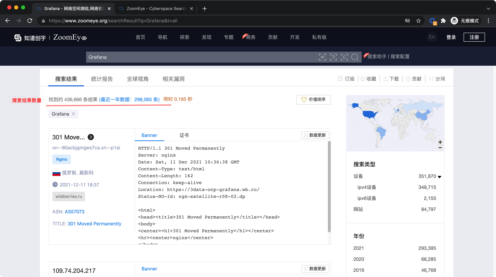ZoomEye 对未注册用户开放 20 条搜索结果，注册用户 400 条搜索结果。其中会员也是按月付费
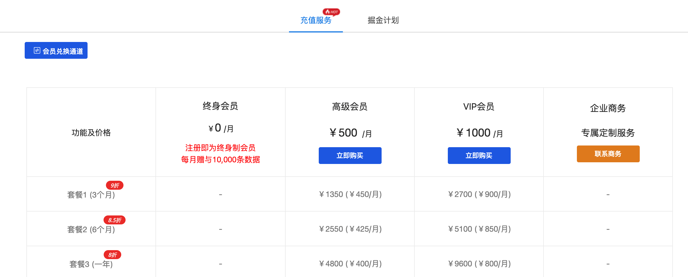FOFA
FOFA 是白帽汇推出的一款网络空间搜索引擎，首页十分简洁
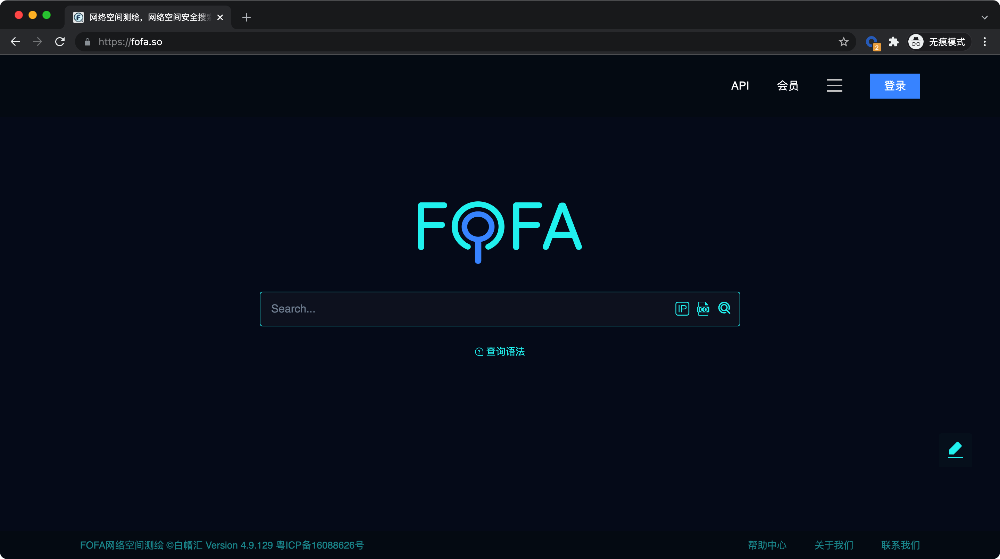fofa 对 Grafana 关键字的搜索结果是 27w 条，其中通过 title 指纹搜索的结果有 23w 条。结果上略少于 ZoomEye，但我这里不可能去验证这上万条数据是否有效，这里只供参考
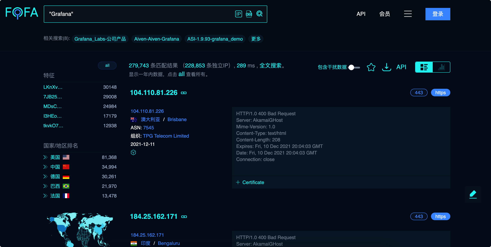fofa 的非注册用户只能获取 10 条搜索结果，注册用户可以查看 50 条结果。另外 fofa 会员是永久制，主要分为高级会员 1000￥，普通会员 300￥
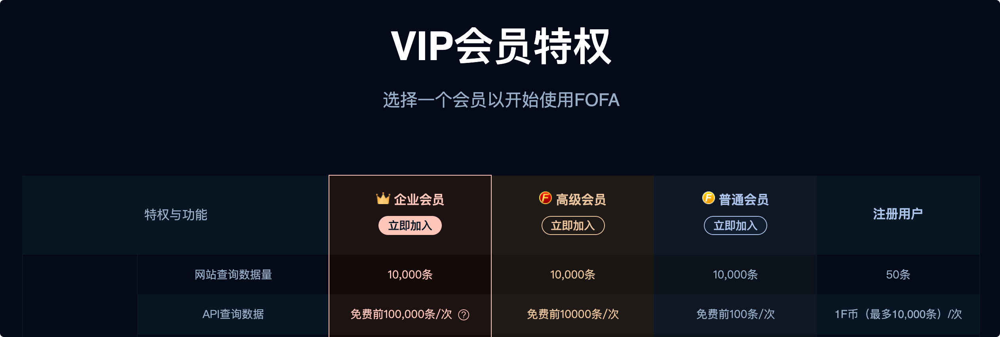Quake
https://quake.360.cn/quake/#/index
Quake 是 360 网络安全响应中心自主研发设计的全网空间测绘系统
Quake 对 Grafana 关键字的搜索结果竟然有 67w+ 条！！！但是独立 ip 显示却只有 16w ，这个数字在 ZoomEye 中为 34w，在 fofa 中为 22w+。不过这里的数据都太庞大，无法实际去评测，只能粗略感受一下
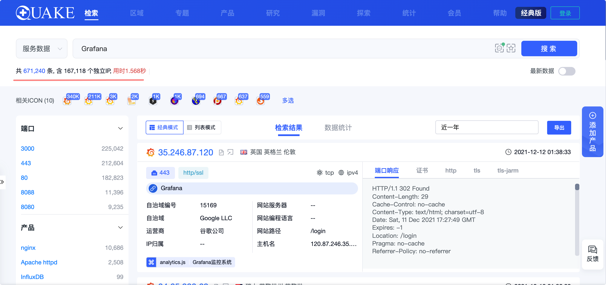Quake 的注册用户可以查看 500 条数据，而且 Queke 注册用户每个月有 3000 积分，可用于下载数据这些。另外 Quake 的会员也是终身制，价格对应权限和 FOFA 差不多，可以说 Quake 是对平民玩家最友善的平台了，赶快薅！！！
hunter
| 搜索引擎 | Grafana（资产数/独立IP） | title:”Grafana”(资产数/独立IP) |
|---|---|---|
| hunter | 33w/15w | 29w/14w |
实战使用
上面以收集 Grafana 资产为演示，简单介绍了 Shodan、ZoomEye、FOFA 和 Quake 的使用，相信很多人已经有了自己选择的方案。上面的简单测评并不规范，在实战使用时，建议结合多个平台使用，这样才能保证信息收集的更加完整。下面将介绍一些实战利用技巧
资产收集工具
github 上有很多优秀的工具对搜索引擎提供的 API 进行了封装。通过工具的形式更有利于批量处理资产，毕竟在浏览器上一页一页的翻效率还是太低了
kunyu
https://github.com/knownsec/Kunyu
kunyu 是一款基于 ZoomEye 的工具，虽然是一个基于命令行的 python 工具，但使用方法类似于 meterpreter ，还是尽可能的优化了用户的使用体验
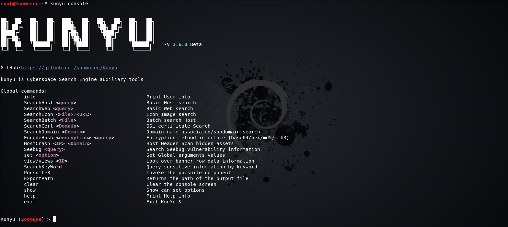fofa_view
https://github.com/wgpsec/fofa_viewer
Fofa_Viewer 一个简单易用的fofa客户端由WgpSec狼组安全团队 f1ashine 师傅主要编写，程序使用使用javaFx编写，便于跨平台使用
该工具具有图形化界面，而且可以在工具直接使用 fofa 语法！！！而且导出数据的信息十分完整！！！我的使用方法就是利用该工具导出大量 url ， 然后利用自己编写的脚本批量处理我下一步的操作，使用上效率极高，而且该工具的学习成本也极低，上手即可用，配合上 fofa 的永久会员，体验感拉满，这里强推！！！
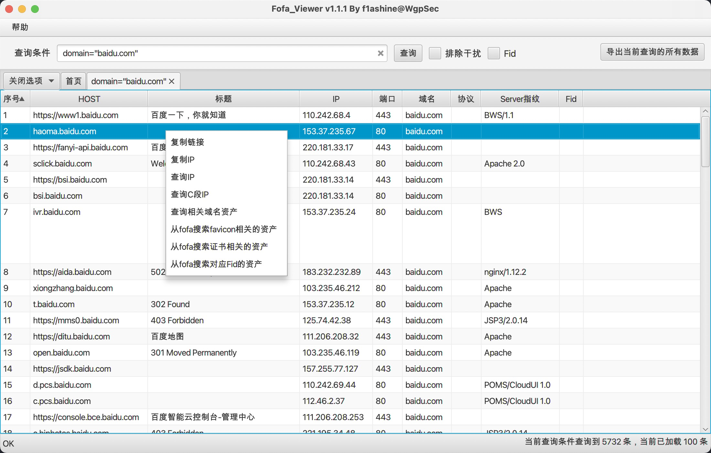Quake 下载数据
我使用工具一大目的是为了批量处理数据，其实这些搜索引擎都有下载搜索结果的功能，而 FOFA web 程序下载数据还需要 F 币，平民玩家玩不起。。。
但 Queke 其实是可以免费下载数据的，即使是注册用户，每个月也可以免费下载 3000 条数据。所以某些时候上使用 Queke 的下载功能也足够了
谷歌浏览器插件
Shodan 和 FOFA 都有提供谷歌浏览器的插件，通过插件我们可以简单的使用网络空间搜索引擎的一些功能
Shodan
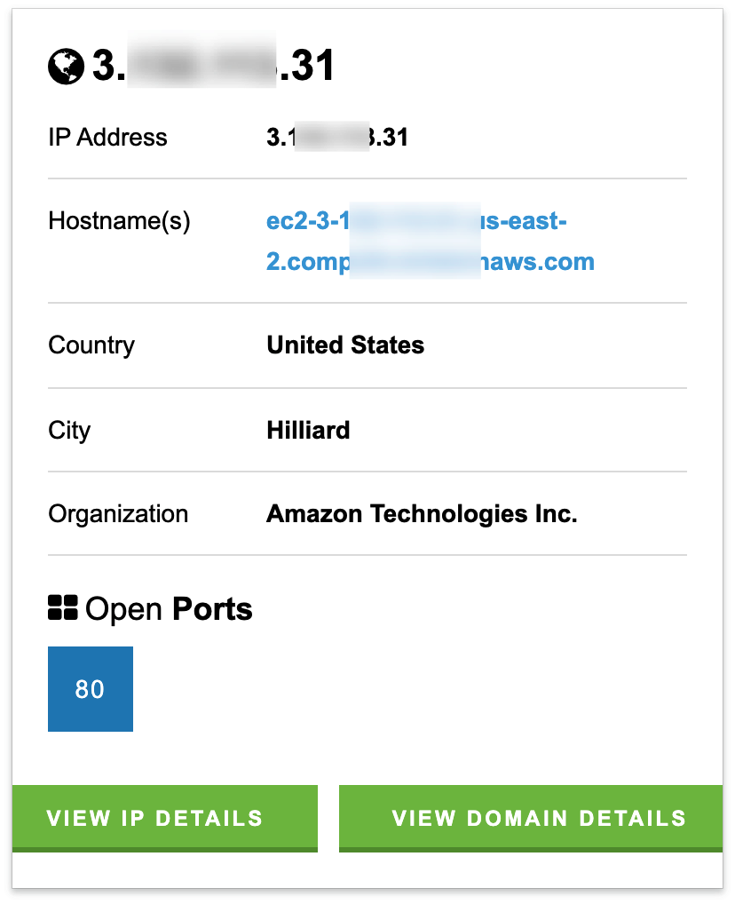fofa
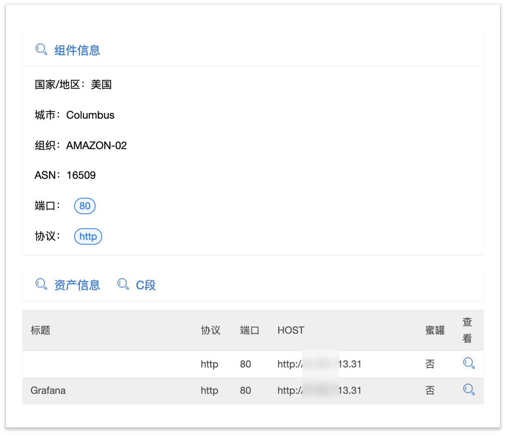使用技巧
icon 信息收集
favicon.ico 一般用于作为缩略的网站标志，它显示在浏览器的地址栏、浏览器标签上或者在收藏夹上，是展示网站个性的缩略 logo 标志，也是一个明显的指纹信息
这几个网络空间搜索引擎都有搜索 icon 信息的功能，在 fofa 中，这部分功能甚至只有高级会员才能使用
下图是 Quake 对 icon 信息的收集结果
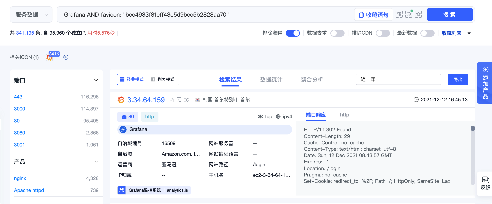更精准的指纹收集
icon 是一个明显的指纹信息，然后我们有些目标可能并没有十分明显的指纹，我们可能需要关注更多的细节，这时候可以考虑 cert 证书、body特征信息等，如下 fofa 语法：
1 | |
蜜罐信息
现在很多网络空间搜索引擎都提供了蜜罐识别的功能，我这里就有一台部署在公网的蜜罐系统，被 Queke 成功的识别到了
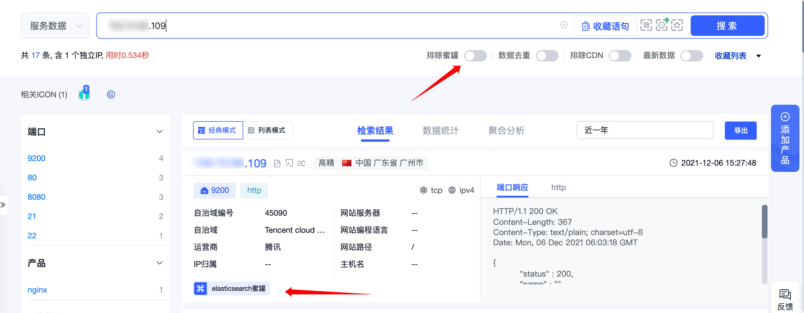相信这个功能对一些小伙伴帮助还是很大的
参考：
[1]马程.网络空间搜索引擎的原理研究及安全应用[J].网络空间安全,2016,7(05):6-10.
Shodan BinaryEdge ZoomEye 网络空间搜索引擎测评：https://paper.seebug.org/970/
本博客所有文章除特别声明外，均采用 CC BY-SA 4.0 协议 ，转载请注明出处！